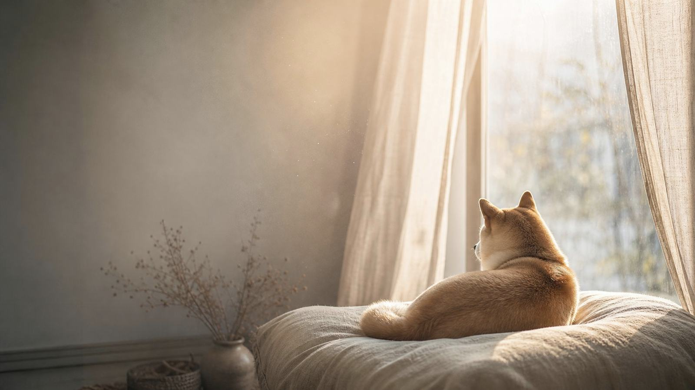

毎朝、玄関まで見送りに来てくれました。
最後の日も、同じ場所で待っていました。
天文計算による実際の値です。誰が計算しても同じ値になります。
NASA / JPL 天体暦 ／ ヒッパルコス星表
段ボールのなかで、ずっと震えていました。夜になっても泣きやまなくて、結局その日は一緒に寝ました。
川沿いを、毎朝40分。雨の日も、雪の日も。この年だけ、なぜか一度も休みませんでした。
新しい家の窓辺が気に入って、そこから一日の大半を眺めていました。日向の位置で、居場所が変わるのが分かりました。
21時、いつもの場所で待っていました。月は32%ほど欠けていて、西の空にベガが低く見えていました。
「ありがとう」より先に、
「またね」と言ってしまいました。
0 の灯りがともっています